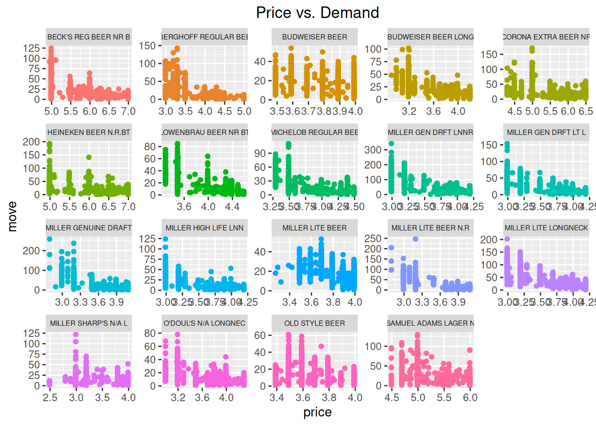

library(tidyverse)1 Introduction to Data Analytics
In this chapter, we will get acclimated to working with data using a suite of packages in R called the tidyverse.1 If you are interested in a complete introduction to the tidyverse syntax, see R for Data Science. Specifically, for details on data visualization see Chapter 3 - Data Visualization and Chapter 7 - Exploratory Data Analysis.
To use the tidyverse packages, we first need to load them in R. Without running this command first, any of the functions used below that are part of tidyverse will produce an error.
1.1 Loading Data Sets
1.1.1 Data formats
Data sets come in different storage formats:
- .csv: Commas separate the values in each row.
- .xls: Excel spreadsheet.
- .txt: Text files
- As part of R package.
R can read in data from most (if not all) of these formats. In our examples, we will use data set from R packages and .csv files.
1.1.2 Reading in Data from R packages
To read in data from an R package, we use the data() function. For example, the ISLR provides several data sets. To read in the OJ data, we simply run data(OJ). As the data is part of a package, don’t forget to first load the package.
library(ISLR)
data(OJ)1.1.3 Reading in Data from .csv files
To read in data from .csv files, we will use the read_csv() function, which is provided by one of the packages in tidyverse.
The following line of code reads in a data set that contains weekly prices, promotional activity, and sales for 20 different brands of beer. The data set comes from many stores within one Chicago grocery retail chain – Dominick’s Finer Foods – and spans more than five years of transactions. The complete raw data are publically available from the Kilts Center for Marketing at the University of Chicago.2
beer <- read_csv("beer.csv")1.2 The Working Directory
For above code to work, the data file beer.csv needs to be located in the current working directory of R. This is the directory that R uses as a default to look for files. To see what your current working directory is, we can use the getwd() function, which is short for “get working directory”. The output is the path to the folder that R is currently looking in for files.
getwd()[1] "C:/Users/Rafael/Documents"1.2.1 Using setwd() to change the working directory
We can change the working directory with setwd("PATH_TO_NEW_WORKING_DIRECTORY"), where NEWPATH is the path to the new working directory. Note that we must use / instead of \ in the path name, otherwise R will not be able to find the folder and give an error.
setwd("C:\Users\Rafael\Documents")Error: '\U' used without hex digits in character string (<text>:1:11)Exercise 1: Change the working directory to your downloads folder, and use the getwd() function to confirm that the working directory has changed.
Solution:
setwd("C:/Users/Rafael/Downloads")
getwd()[1] "C:/Users/Rafael/Downloads"1.2.2 Using the “Files” tab to change the working directory
Another way to change the working directory is to use the “Files” tab in the bottom right panel of RStudio. Navigate to the folder you want to use as your working directory, and click “More” and then “Set As Working Directory”.
1.2.3 Open a script to automatically set the working directory
Another way to set the working directory is to open a .R file with RStudio. RStudio will automatically set the working directory to the folder where the .R file is located. This makes it very convenient to keep all of your code and data files in the same folder.
To make use of this, you should create a new folder for every project (or assignment). You can do this directly in RStudio by going to the “File” tab, navigating to whereever you want the new folder to be, and then clicking “Create a new folder”. This will open a window that allows you to create a new folder and name it.
Then, you can create a new .R file by going to the “File” tab, clicking “New File”, and then “R Script”. This will allow you to name and save a new script in the folder. Then, whenever you open this script with a new RStudio session, RStudio will automatically set the working directory to the folder where the script is located.
IMPORTANT: This only works if all instances of RStudio have been closed! If you have another RStudio session open, it will not automatically set the working directory.
1.2.4 Providing full file paths to read in data
Instead of changing the working directory, we can also specify the full file path to the beer.csv data we want to load. We can do this by running read_csv("PATH/beer.csv"), where we replace PATH with the path to the beer.csv file. Note again that we need to use / and not \ in the file path.
beer <- read_csv("C:/Users/Rafael/Documents/beer.csv")1.2.5 Uploading data in RStudio/Posit cloud
If you are using RStudio in the cloud, you need to upload the .csv data file to the cloud before you can read it in. To do this, click on the “Upload” button in the “Files” tab, and then select the file you want to upload using the file browser.
1.3 Inspecting Data
We always want to view the data after importing to make sure all the values were read-in correctly. To inspect the first few lines of a data set, use the head( ) command.
head(beer,3)| store | upc | week | move | price | sale | profit | brand | packsize | itemsize | units |
|---|---|---|---|---|---|---|---|---|---|---|
| 86 | 1820000016 | 91 | 23 | 3.49 | NA | 19.05 | BUDWEISER BEER | 6 | 12 | oz |
| 86 | 1820000784 | 91 | 9 | 3.79 | NA | 28.23 | O'DOUL'S N/A LONGNEC | 6 | 12 | oz |
| 86 | 1820000834 | 91 | 9 | 3.69 | NA | 22.03 | BUDWEISER BEER LONG | 6 | 12 | oz |
| 86 | 1820000987 | 91 | 78 | 3.29 | B | 5.78 | MICHELOB REGULAR BEE | 6 | 12 | oz |
| 86 | 3410000354 | 91 | 35 | 3.69 | NA | 22.98 | MILLER LITE BEER | 6 | 12 | oz |
| 86 | 3410000554 | 91 | 12 | 3.69 | NA | 22.98 | MILLER GENUINE DRAFT | 6 | 12 | oz |
We can see that our data set contains 11 different variables (i.e., columns). A brief summary of each variable is provided below.
store: unique store ID numberupc: Universal Product Codeweek: week ID numbermove: number of units soldprice: retail price in US dollarssale: indicator of promotional activityprofit: gross profit marginbrand: brand namepacksize: number of items in one packageitemsize: size of items in one packageunits: units of items
1.4 Summary Statistics
We can compute summary statistics in the tidyverse by combining the summarise operator with any one (or many!) of R’s built-in statistics functions. A few of the most common are listed below.
| Statistic | R Function |
|---|---|
| mean | `mean( )` |
| median | `median( )` |
| variance | `var( )` |
| standard deviation | `sd( )` |
| correlation | `cor( )` |
For example, let’s compute the average price across all products and weeks. For this, we’re going to use the pipe operator %>%, which works by putting together a function from the left to right. Below, the dataset beer is put as an argument into the summarise() function. An alternative way of writing the same function would be summarise(beer,mean(price)).
beer %>%
summarise(mean(price))# A tibble: 1 × 1
`mean(price)`
<dbl>
1 4.28Now suppose we wanted to find the average price for only one brand of beer, say Budweiser. To do this, we can use the filter( ) operator to select rows in the data that satisfy certain conditions. Here we want Budweiser beers so the condition is that brand is equal to BUDWEISER BEER, or brand=="BUDWEISER BEER". Note that a double equals sign == is always used when writing logical statements to check equality. As above, we again use %>% to put the different commands together.
beer %>%
filter(brand=="BUDWEISER BEER") %>%
summarise(mean(price))# A tibble: 1 × 1
`mean(price)`
<dbl>
1 3.81To compute summary statistics for multiple brands, we can use the group_by( ) operator. As the name suggests, this operator tells R to first group by a certain categorical variable, and to compute a summary for each level that the given variable takes on.
beer %>%
group_by(brand) %>%
summarise(mean(price))# A tibble: 19 × 2
brand `mean(price)`
<chr> <dbl>
1 BECK'S REG BEER NR B 5.88
2 BERGHOFF REGULAR BEE 3.94
3 BUDWEISER BEER 3.81
4 BUDWEISER BEER LONG 3.75
5 CORONA EXTRA BEER NR 5.80
6 HEINEKEN BEER N.R.BT 6.34
7 LOWENBRAU BEER NR BT 4.05
8 MICHELOB REGULAR BEE 4.04
9 MILLER GEN DRFT LNNR 3.69
10 MILLER GEN DRFT LT L 3.69
11 MILLER GENUINE DRAFT 3.78
12 MILLER HIGH LIFE LNN 3.68
13 MILLER LITE BEER 3.82
14 MILLER LITE BEER N.R 3.74
15 MILLER LITE LONGNECK 3.69
16 MILLER SHARP'S N/A L 3.36
17 O'DOUL'S N/A LONGNEC 3.78
18 OLD STYLE BEER 3.68
19 SAMUEL ADAMS LAGER N 5.41We can also easily extend the code above to compute multiple summary statistics across groups.
beer %>%
group_by(brand) %>%
summarise(mean(price), mean(move))# A tibble: 19 × 3
brand `mean(price)` `mean(move)`
<chr> <dbl> <dbl>
1 BECK'S REG BEER NR B 5.88 18.3
2 BERGHOFF REGULAR BEE 3.94 15.6
3 BUDWEISER BEER 3.81 16.3
4 BUDWEISER BEER LONG 3.75 18.2
5 CORONA EXTRA BEER NR 5.80 15.4
6 HEINEKEN BEER N.R.BT 6.34 16.7
7 LOWENBRAU BEER NR BT 4.05 16.9
8 MICHELOB REGULAR BEE 4.04 14.2
9 MILLER GEN DRFT LNNR 3.69 51.0
10 MILLER GEN DRFT LT L 3.69 20.1
11 MILLER GENUINE DRAFT 3.78 16.4
12 MILLER HIGH LIFE LNN 3.68 14.1
13 MILLER LITE BEER 3.82 18.1
14 MILLER LITE BEER N.R 3.74 18.7
15 MILLER LITE LONGNECK 3.69 38.4
16 MILLER SHARP'S N/A L 3.36 11.5
17 O'DOUL'S N/A LONGNEC 3.78 12.0
18 OLD STYLE BEER 3.68 13.4
19 SAMUEL ADAMS LAGER N 5.41 20.61.5 Graphical Summaries
Data visualization is one of the strengths of the tidyverse. A fairly exhaustive list of graph types can be found at https://www.r-graph-gallery.com. For our purposes, we will start with a few of the most commonly used graphs.
| Graph | Operator |
|---|---|
| histogram | `geom_histogram( )` |
| box plot | `geom_boxplot( )` |
| bar plot | `geom_bar( )` |
| line plot | `geom_line( )` |
| scatter plot | `geom_point( )` |
Let’s start be looking at the distribution of weekly prices across all products.
beer %>%
ggplot(aes(x=price)) +
geom_histogram() +
labs(title="Distribution of Weekly Prices")This is an example of a histogram. The variable on the x-axis (price) is split into different bins, and the y-axis counts the number of observations that fall withiin each bin.
We can also inspect the distribution of a variable like prices using a boxplot.
beer %>%
ggplot(aes(y=price)) +
geom_boxplot() +
labs(title="Distribution of Weekly Prices")
Notice that the focal variable of interest is now on the y-axis. The rectangular box shown in the middle of the plot indicates three key summary statistics: the bottom line is the 25th percentile, the middle line is the 50th percentile (or median), and the top line is the 75th percentile. The vertical line starting around 2.5 and ending around 7 indicates the full range of prices in the data.
The figure above shows the distribution of prices across all prodcuts. However, we may want to explore whether the distribution of prices is different across products. This can be done by defining x=brand within the ggplot( ) function.
beer %>%
ggplot(aes(x=brand, y=price)) +
geom_boxplot() +
labs(title="Distribution of Weekly Prices")We have succeeded in creating a box plot for each brand, but the brand labels are impossible to read! As easy fix is to rotate the x-axis labels, which can be controlled using the theme() operator. The theme() operator is generally what we use to change plot formatting, such as the size of the axis labels or the position of the title.
beer %>%
ggplot(aes(x=brand, y=price)) +
geom_boxplot() +
labs(title="Distribution of Weekly Prices") +
theme(axis.text.x = element_text(angle=90, hjust=1),
plot.title = element_text(hjust=0.5))Much better!
Next, let’s explore the variation of prices over time. We can make a time series plot (or line plot) to do this, where we specify group=brand so that R makes a separate line for each brand.
beer %>%
ggplot(aes(x=week, y=price, group=brand)) +
geom_line() +
labs(title="Beer Prices over Time") +
theme(plot.title = element_text(hjust=0.5))This was a good attempt, but the plot is not especially useful! While we do notice that the prices are changing over time, we can’t identify the products themselves so we don’t know which products are changing more or less than others.
We can fix this in a couple ways. The first thing we will try is to simply add color to the plot above, so that we can identify a product by the color of its line.
beer %>%
ggplot(aes(x=week, y=price, group=brand, color=brand)) +
geom_line() +
labs(title="Beer Prices over Time") +
theme(plot.title = element_text(hjust=0.5))This is better, but it is still hard to identify products because of how much overlap there is in prices. So maybe the best thing to do is create a separate plot for each brand. This can be easily accomplished using facet_wrap( ).
beer %>%
ggplot(aes(x=week,y=price,group=brand,color=brand)) +
geom_line(show.legend=FALSE) +
labs(title="Beer Prices over Time") +
facet_wrap(brand ~ .) +
theme(plot.title = element_text(hjust=0.5),
strip.text.x = element_text(size=6))Note that we added show.legend=FALSE to geom_line( ) since we no longer need the color to identify products. We also added an option to theme( ) to control the size of the text to ensure that the labels are all legible.
Finally, let’s explore the relationship between two variables like price and demand.
beer %>%
ggplot(aes(x=price, y=move)) +
geom_point() +
labs(title="Price vs. Demand") +
theme(plot.title = element_text(hjust=0.5))This figure matches our intuition from economics, which is that as price increases, demand seems to fall. We can even imagine a line going through these points – this line would be a demand curve!
As before, it would be interesting to know how the relationship between price and demand changes across products. Let’s apply the same techniques above – adding color and using separate plots – to investigate.
beer %>%
ggplot(aes(x=price, y=move, color=brand)) +
geom_point() +
labs(title="Price vs. Demand") +
theme(plot.title = element_text(hjust=0.5))beer %>%
ggplot(aes(x=price, y=move, color=brand)) +
geom_point(show.legend=FALSE) +
labs(title="Price vs. Demand") +
facet_wrap(brand~.,scales="free") +
theme(plot.title = element_text(hjust=0.5),
strip.text.x = element_text(size=6))
These last two plots indeed show that demand is negatively related to price (as price increases, demand falls) and that the magnitude of this relationship may change across products.